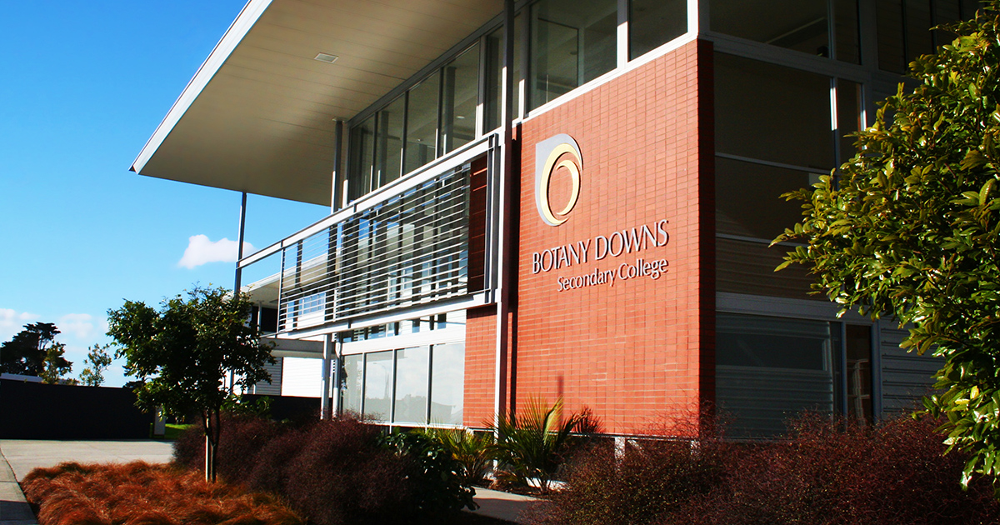

ACADEMIC

spacer spacer
Some of my achievements over the course of my time at Botany Downs Secondary College include: Academic Excellence - Learning Area Excellence - Year 9 Technology, getting all High Excellences in French and all Excellences in DIT and DVC. My favourite subjects last year were Art, DIT, TRM(Te Reo Maori). I really enjoyed these subjects and because I loved them so much, I chose them as my option subjects for year 10.